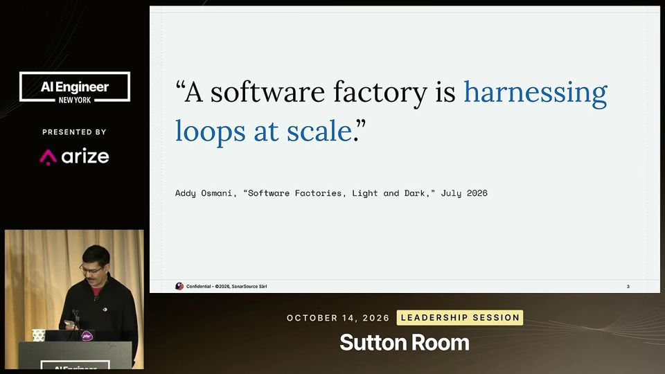
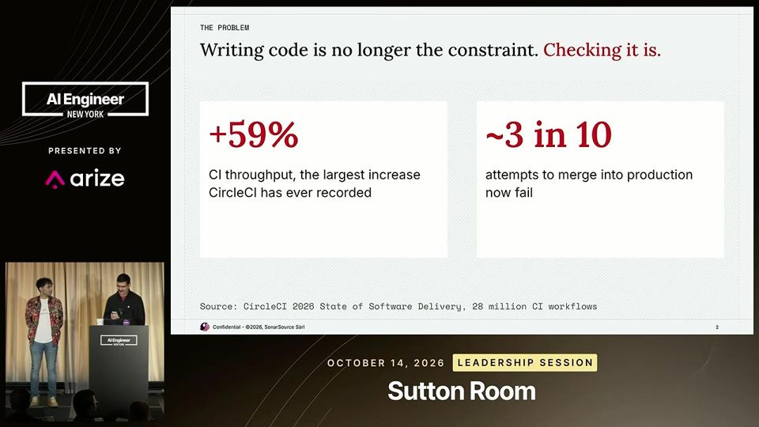
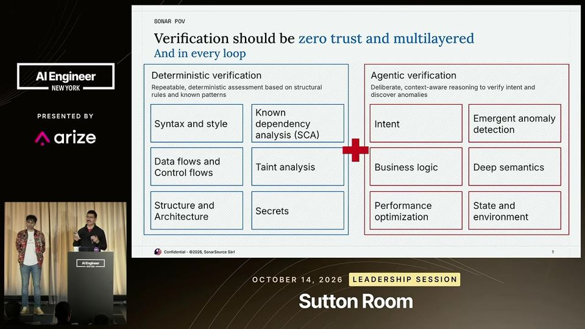
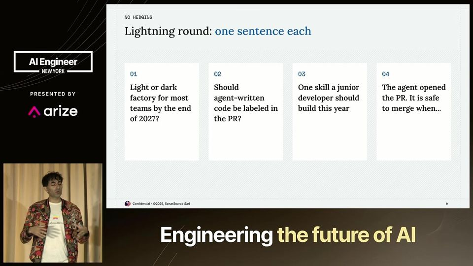

How Anthropic Merges 30,000 Code Changes a Day - Manish Kapur, Sonar & Addy Osmani, Anthropic
Escrever código ficou barato; o gargalo agora é verificar. Autonomia na fábrica de software se conquista com verificação independente em cada loop.
Em 3 frases
Agentes de código abrem pull requests (PRs, pedidos de mudança) mais rápido do que qualquer pessoa consegue revisar, e parte dos merges falha. Para os palestrantes, o que falta é confiança no código.
Addy Osmani conta que a Anthropic passou de cerca de 2.500 para 30.000 mudanças mescladas por dia. O Claude faz uma primeira revisão, testa a mudança como um usuário real e entrega evidências (vídeos, capturas de tela) para a pessoa checar.
Manish Kapur, da Sonar, defende verificação em camadas: análise determinística, revisão por agente e segurança da cadeia de suprimentos. Ele defende também controles, permissões e sandbox, e rótulo nos PRs escritos por agentes.
Antes de ler
Fábrica de luz acesa e fábrica no escuro
Software factory (fábrica de software) é um conjunto de loops de agentes em escala. Na versão de luz acesa, agentes planejam, constroem, checam e entregam, mas uma pessoa aplica julgamento e gosto. Na versão no escuro, a pessoa só define a intenção e entra nas exceções. A maioria das equipes está no meio desse espectro.

Throughput sobe, merges falham
Segundo dados do CircleCI citados no início, o throughput (volume de trabalho entregue) subiu cerca de 59%, mas três em cada dez tentativas de levar código para produção falham. Na pesquisa da Sonar, 76% dos desenvolvedores dizem que o código de IA sai rápido demais para ser verificado.

Como a Anthropic revisa 30 mil mudanças por dia
O Claude faz a primeira revisão e tenta usar a mudança como um usuário: abre o navegador, roda testes ponta a ponta e linters. Hooks (gatilhos automáticos) rodam a cada edição e corrigem o PR em loop. Padrões da equipe ficam em CLAUDE.md ou AGENTS.md. As pessoas checam as evidências, como vídeos e capturas de tela.
06:48 Resume o fluxo de revisão com evidência que sustenta o volume.
Mais 2 ideias deste talk
Verificação em três camadas
A Sonar propõe uma abordagem de zero trust (confiança zero). A camada 1 é determinística e pega bugs e falhas como SQL injection. A camada 2 é revisão por agente, que pega erros de lógica e de intenção. A camada 3 protege a cadeia de suprimentos contra CVEs e pacotes maliciosos. Cada loop precisa dessa verificação.

Rotular PRs de agente e manter um dono
Ambos defendem rotular PRs escritos por agentes, por auditabilidade e para saber quais checagens extras aplicar. Addy diz que, mesmo ao disparar uma execução do Claude, continua responsável se algo der errado. Para eles, o PR é seguro para mesclar quando a confiança é total ou o risco foi mitigado ao máximo.

A Sonar vende ferramentas de verificação de código e fala em um painel patrocinado, e Addy Osmani representa a Anthropic, que vende o Claude Code e um produto de code review. Ambos têm interesse em dizer que mais verificação por ferramentas é a resposta. Os números da pesquisa State of Code ainda não foram publicados, e a amostra é de pouco mais de mil desenvolvedores. O dado do CircleCI não explica por que os merges falham. O talk não mostra taxa de bugs nem de reversão na Anthropic após os 30 mil merges por dia.
O que fazer com isso
- Peça ao agente evidências a cada PR: teste rodado, captura de tela ou vídeo do fluxo no navegador. Revise essas evidências antes do código.
- Registre o padrão de qualidade da equipe em um arquivo CLAUDE.md ou AGENTS.md, para o agente consultar durante a revisão.
- Rotule os PRs escritos por agentes e nomeie uma pessoa responsável por cada um.
- Liste os tipos de teste que você já tem (ponta a ponta, de propriedade, visuais) e identifique a lacuna antes de deixar o agente aprovar merges sozinho.